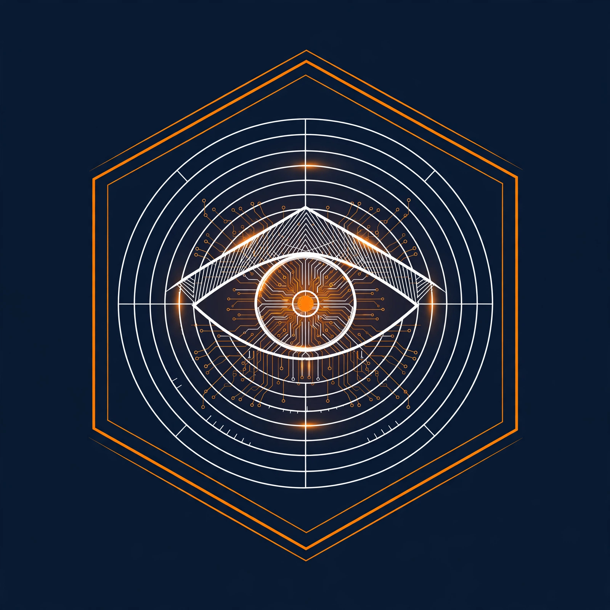

A modern, detection-first web vulnerability scanner — 70 checks, online AI triage, and professional reports. Pure Python standard library: no pip installs, runs anywhere Python runs, including Termux.
Nine check families, every one detection-only — harmless marker probes, never exploitation.
.git, .env, backups, phpinfo, server-status, directory listing, verbose errors, security.txt and more.
CSP quality, HSTS, framing, content-type sniffing, referrer & permissions policy, version disclosure.
Expiry, self-signed, hostname mismatch, legacy TLS 1.0/1.1, HTTPS enforcement.
Decode-only analysis: alg=none, missing or excessive expiry, sensitive claims.
Secure, HttpOnly, SameSite — assessed per cookie.
Reflected marker, SQL error signature, open redirect, GraphQL introspection.
Reflected origins, wildcard with credentials, null origin.
Mixed content, forms over HTTP, missing SRI, TRACE and dangerous methods.
Optional AI summary of what to fix first — bring your own key, nothing is bundled. Auto-selects the first configured provider and falls back to the next on failure: Groq · Gemini · OpenRouter · OpenAI · Claude. Without a key, the scanner still runs at full strength.
git clone https://github.com/kontenlaris-studio/kl-deepscan cd kl-deepscan # your own / authorized targets only — external targets require --yes python3 deepscan.py https://your-site.example --yes \ --format html --out report.html --triage
Reports in HTML (branded, self-contained), JSON, and SARIF 2.1.0 for CI pipelines.